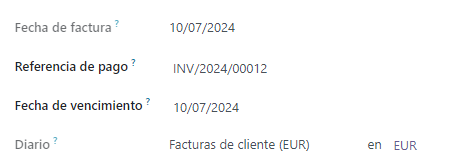

Multi-currency system¶
Odoo allows you to issue invoices, receive bills, and record transactions in currencies other than the main currency configured for your company. You can also set up bank accounts in other currencies and run reports on your foreign currency activities.
Configuration¶
Main currency¶
The main currency is defined by default according to the company’s country. You can change it by going to and changing the currency in the Main Currency setting.
Enable foreign currencies¶
Go to , and enable the currencies you wish to use by toggling the Active button.

Currency rates¶
Manual update¶
To manually create and set a currency rate, go to , click on the currency you wish to change the rate of, and under the Rates tab, click Add a line to create a new rate.

Automatic update¶
When you activate a second currency for the first time, Automatic Currency Rates appears under . By default, you have to click on the Update now button (🗘) to update the rates.
Odoo can update the rates at regular intervals. To do so, change the Interval from Manually to Daily, Weekly, or Monthly. You can also select the web service from which you want to retrieve the latest currency rates by clicking on the Service field.
Exchange difference entries¶
Odoo automatically records exchange differences entries on dedicated accounts, in a dedicated journal.
You can define which journal and accounts to use to post exchange difference entries by going to and editing the Journal, Gain Account, and Loss Account.
Example
If you receive a payment for a customer invoice one month after it was issued, the exchange rate has likely changed since. Therefore, this fluctuation implies some profit or loss due to the exchange difference, which Odoo automatically records in the default Exchange Difference journal.
Chart of accounts¶
Each account can have a set currency. By doing so, all moves relevant to the account are forced to have that account’s currency.
To do so, go to and select a currency in the field Account Currency. If left empty, all active currencies are handled instead of just one.
Journals¶
If a currency is set on a journal, that journal only handles transactions in that currency.
To do so, go to , open the journal you want to edit, and select a currency in the field Currency.
Multi-currency accounting¶
Invoices, bills, and other documents¶
For all documents, you can select the currency and journal to use for the transaction on the document itself.
Payment registration¶
To register a payment in a currency other than your company’s main currency, click on the Register Payment payment button of your document and, in the pop-up window, select a currency in the Amount field.
Bank transactions¶
When creating or importing bank transactions, the amount is in the company’s main currency. To input a foreign currency, select a currency in the Foreign Currency. Once selected, enter the Amount in your main currency for it to automatically get converted in the foreign currency in the Amount in Currency field.

When reconciling, Odoo displays both the foreign currency amount and the equivalent amount in your company’s main currency.
Exchange rate journal entries¶
To see exchange difference journal entries, go to .